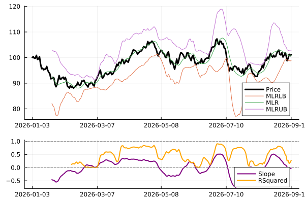

Regression Indicators
Example
using Temporal, Indicators, Plots, Random
Random.seed!(1)
x = TS(100 .+ cumsum(randn(252)))
x.fields[1] = :Price
lookback = 20
n_sigma = 2.0
reg = mlr_bands(x, n=lookback, se=n_sigma)
coef = mlr_beta(x, n=lookback)
rsq = mlr_rsq(x, n=lookback)
f1 = plot(x, linewidth=3, color=:black)
plot!(reg, linewidth=1)
f2 = plot([coef[:Slope] rsq], linewidth=2, color=[:purple :orange])
hline!([0.0, 1.0], linestyle=:dash, color=:grey, label="")
plot(f1, f2, layout=@layout[a{0.7h}; b{0.3h}])"/home/runner/work/Indicators.jl/Indicators.jl/docs/build/reg_example.svg"
Reference
Indicators.mlr — Method
mlr(y::Array{T}; n::Int64=10)::Array{Float64} where {T<:Real}Moving linear regression predictions
Indicators.mlr_bands — Method
mlr_bands(y::Array{T}; n::Int64=10, se::T=2.0)::Matrix{Float64} where {T<:Real}Moving linear regression bands
Output:
Column 1: Lower bound
Column 2: Regression estimate
Column 3: Upper bound
Indicators.mlr_beta — Method
mlr_beta(y::Array{T}; n::Int64=10, x::Array{T}=collect(1.0:n))::Matrix{Float64} where {T<:Real}Moving linear regression intercept (column 1) and slope (column 2)
Indicators.mlr_intercept — Method
mlr_intercept(y::Array{T}; n::Int64=10, x::Array{T}=collect(1.0:n))::Array{Float64} where {T<:Real}Moving linear regression y-intercept
Indicators.mlr_lb — Method
mlr_lb(y::Array{T}; n::Int64=10, se::T=2.0)::Array{Float64} where {T<:Real}Moving linear regression lower bound
Indicators.mlr_rsq — Method
mlr_rsq(y::Array{T}; n::Int64=10, adjusted::Bool=false)::Array{Float64} where {T<:Real}Moving linear regression R-squared or adjusted R-squared
Indicators.mlr_se — Method
mlr_se(y::Array{T}; n::Int64=10)::Array{Float64} where {T<:Real}Moving linear regression standard errors
Indicators.mlr_slope — Method
mlr_slope(y::Array{T}; n::Int64=10, x::Array{T}=collect(1.0:n))::Array{Float64} where {T<:Real}Moving linear regression slope
Indicators.mlr_ub — Method
mlr_ub(y::Array{T}; n::Int64=10, se::T=2.0)::Array{Float64} where {T<:Real}Moving linear regression upper bound